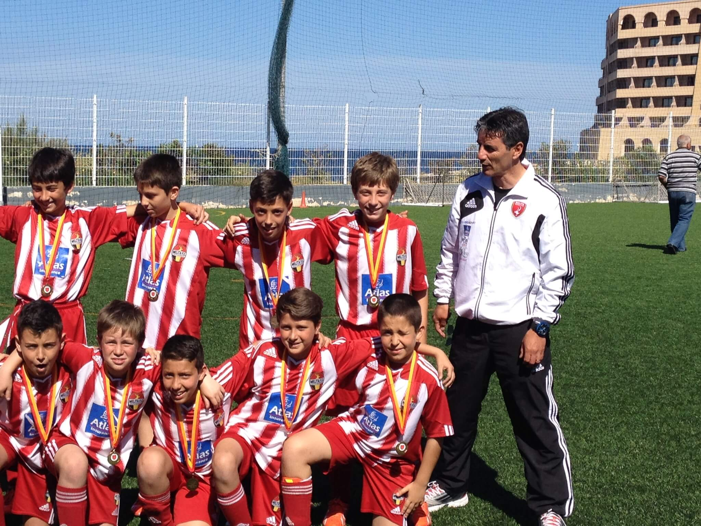
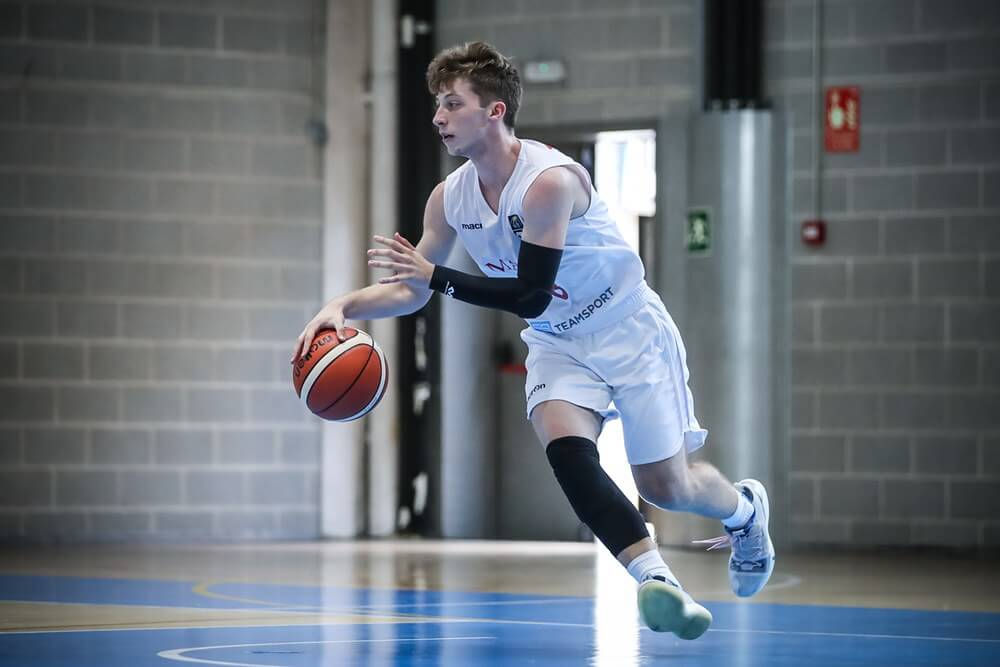
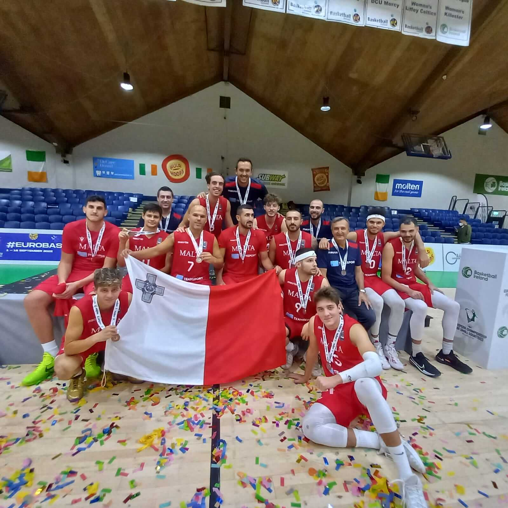
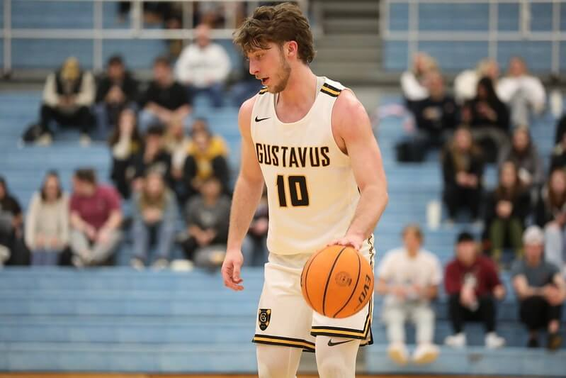

Activities
I grew up as a sports enthusiast, always eager to explore new athletic endeavors. Along the way, I immersed myself in a variety of disciplines including Soccer,
Basketball, Baseball, Judo, Tennis, Table tennis, Gymnastics, Track, and Swimming. My parents instilled in me the belief that a solid foundation in the fundamental
pillars of sport—Track, Swimming, and Gymnastics—lays the groundwork for success in any athletic pursuit. Despite dabbling in various sports, Basketball and
Soccer captured my heart the most during my formative years.


By the age of 13, I faced a pivotal decision between these two passions. The scales tipped in favor of basketball when I was selected for the Maltese Basketball
Academy, an honor reserved for the nation's top basketball talents. Representing Malta at the U16 and U18 levels further solidified my dedication to the sport,
although international success remained elusive. Domestically, however, I clinched multiple league titles and established myself as one of the premier players in
the country.
Recognizing the need for greater challenges and opportunities, my family and I made the bold decision for me to spend my Junior and Senior years of high school
in America. This move not only allowed me to compete against tougher opponents but also provided a conducive environment to balance my athletic pursuits with
academic endeavors. After meticulous research, I chose Oak Hill Academy renowned for its illustrious basketball program, despite encountering initial challenges
adjusting to the intensity of the American game.
Academically, I excelled, discovering a newfound passion for Electrical Engineering and Computer Science, earning straight A's. While my first year on the court
was fraught with uncertainties and self-doubt, I gradually found my footing, bolstered by increased confidence and gameplay in subsequent years. However, the
onset of the COVID-19 pandemic abruptly curtailed my high school basketball journey, leading me to reflect on my next steps.
Undeterred by setbacks, I enrolled at Gustavus Adolphus College to pursue both my athletic and academic aspirations. Over my freshman and sophomore years, I contributed to the college basketball team while also earning coveted spots on the Malta Senior Men's National Team, securing accolades for my country. I was also featured in an article on the biggest newspaper in Malta for my performance, click the button below to be directed to the article:
Despite facing disappointment in not making the college team in my junior year, this setback catalyzed a deeper focus on Computer Science, ultimately steering me towards
a path aligned with my evolving interests and potential. I also rekindled my interest in soccer, now playing for the Gustavus Adolphus College club soccer team.

